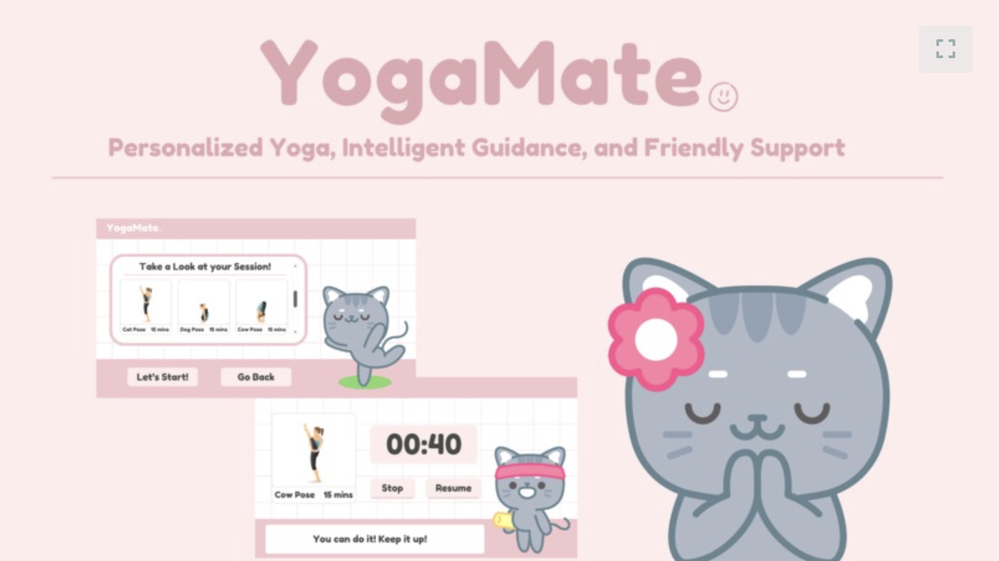

May 19, 2024

YogaMate was inspired by the challenges brought to light during the COVID-19 pandemic, including increased loneliness from social isolation and declining fitness levels due to reduced physical activity. Recognizing the transformative benefits of yoga for both physical and mental health, we aimed to create an app that not only promotes fitness but also combats loneliness through an engaging AI companion.
YogaMate is an AI-powered yoga fitness app that offers personalized yoga plans generated using OpenAI's API, guided by its friendly AI mascot, Luna, whose voice is brought to life through the Eleven Labs API. With features like tailored yoga sessions, real-time guidance, and constant encouragement, YogaMate fosters a sense of connection and motivation while addressing users' overall well-being.
Built using Next.js for the frontend, styled with Tailwind CSS, and integrated with cutting-edge APIs, YogaMate is both functional and user-friendly. Our primary challenges included seamlessly integrating multiple APIs and fine-tuning AI-generated content to ensure relevance to the yoga experience. We’re proud of creating an app that uniquely combines fitness and companionship, along with a polished interface and an engaging user experience.
Looking ahead, we plan to introduce mood and progress tracking, social features for community engagement, and multi-language support to expand accessibility and help users worldwide on their wellness journey.